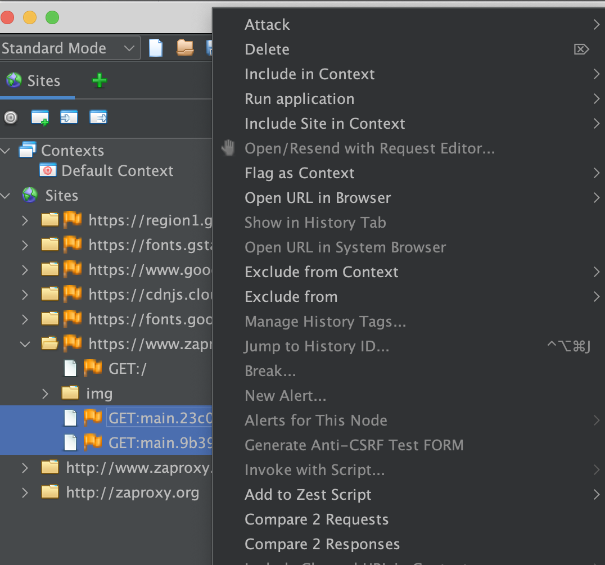
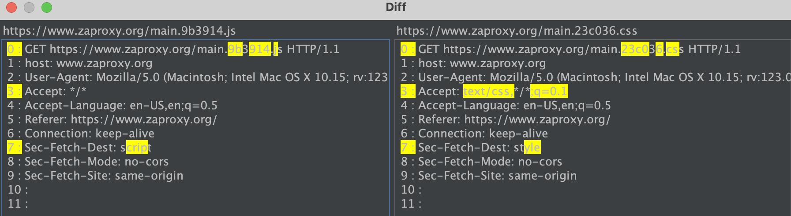

L’extension Diff vous permet de comparer 2 messages (requêtes ou réponses).
Il est accessible en sélectionnant deux messages depuis n’importe quel composant affichant plusieurs messages, par exemple : l’arborescence des sites, puis en ouvrant le menu contextuel (généralement via un clic droit). Vous verrez les options « Comparer 2 requêtes » et « Comparer 2 réponses ». En cliquant sur l’une d’elles, la fenêtre Diff s’ouvrira.
Voici une capture d’écran du menu contextuel lors de la sélection de deux messages.

Note : Ces deux options sont grisées (désactivées) lorsque vous sélectionnez un seul message puis ouvrez le menu contextuel.
La fenêtre Diff affiche les différences entre deux messages, surlignées en jaune.
